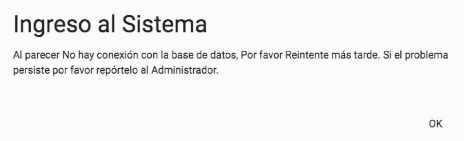
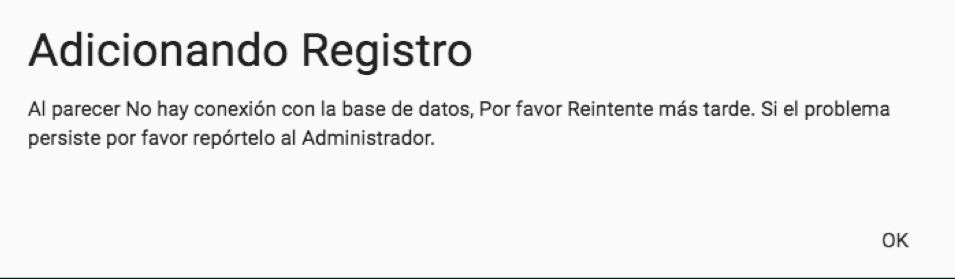
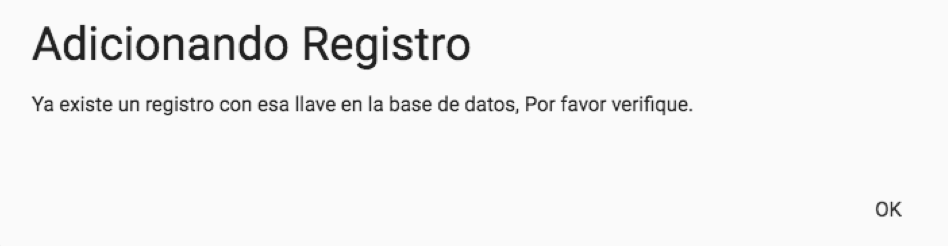
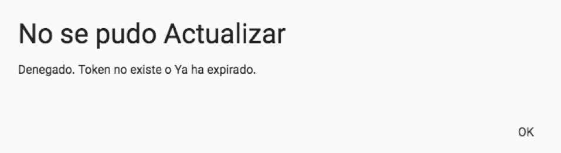

A continuación los posibles mensajes de error con detalle sobre su razón:
 Aparece si se presenta alguna falla de comunicación con la base de datos, si perdió la conexión a Internet o si llegase a estar en mantenimiento programado ya sea al Ingrsar al sistema o cuando se intentó agregar o modificar un registro. Si no ha recibido aviso anterior de que se va a llevar a cabo algún mantenimiento, verifique que tiene conexión a Internet, y si luego de unos minutos de espera prudencial aún persiste el inconveniente, por favor repórtelo al administrador del sistema.
El campo identificado con ícono de una pequeña llave, a recibido un valor que ya existe en la base de datos para esa tabla. Por ejemplo, está intentando crear un usuario con código Tesorero, y ya existe un usuario con ese código en la tabla de usuarios. Mire en la lista de la tabla si efectivamente ya existe, y asígnele un código de usuario diferente al usuario que está intentando agregar. Si realmente no existe ese código de usuario en la lista, por favor reporte el inconveniente al administrador del sistema.
Al momento de guardar información, se detectó que su sesión en el sistema ya expiró, o que su código de usuario ingresó al sistema desde otro dispositivo (o por otro navegador o por otra ventana de este mismo navegador), por lo cual la sesión que tenía abierta ya no es válida pues fue reemplazada por una nueva. Para solucionar este inconveniente, se recomienda cerrar todas las ventanas que tenga abiertas de este sistema, y luego ingresar normalmente, o dejar una sola ventana abierta, cerrar la sesión en esa ventana, e ingresar nuevamente. Si el problema persiste o es repetitivo, por favor reportarlo al Administrador del Sistema